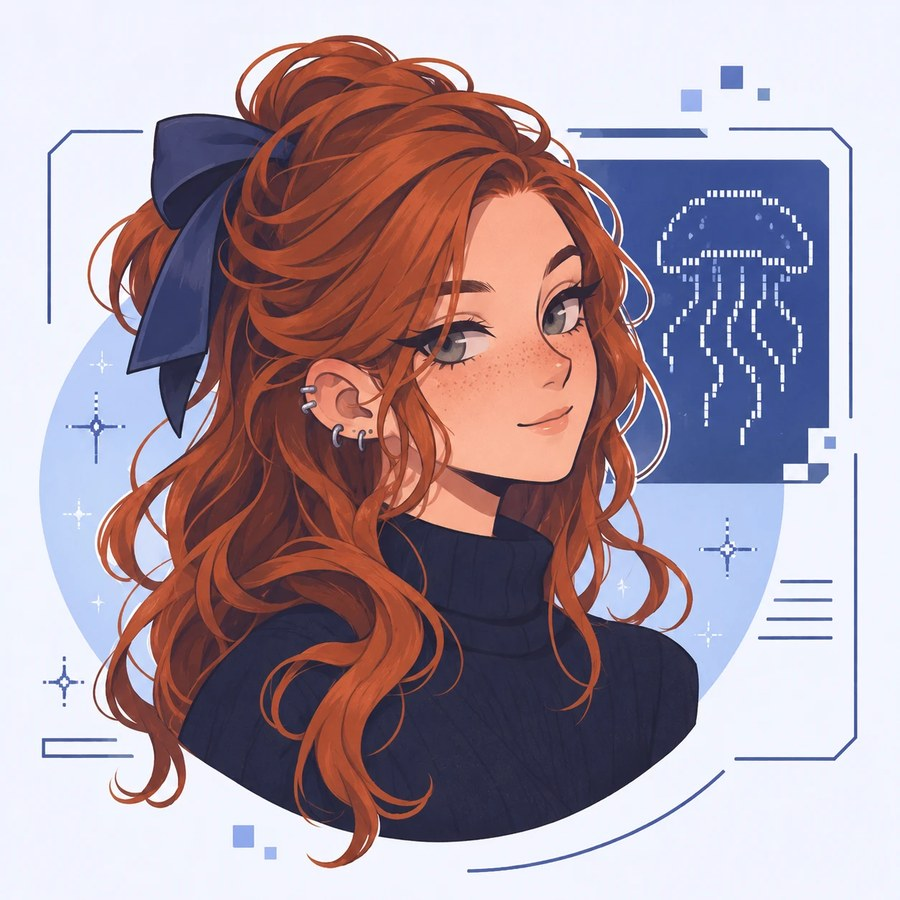
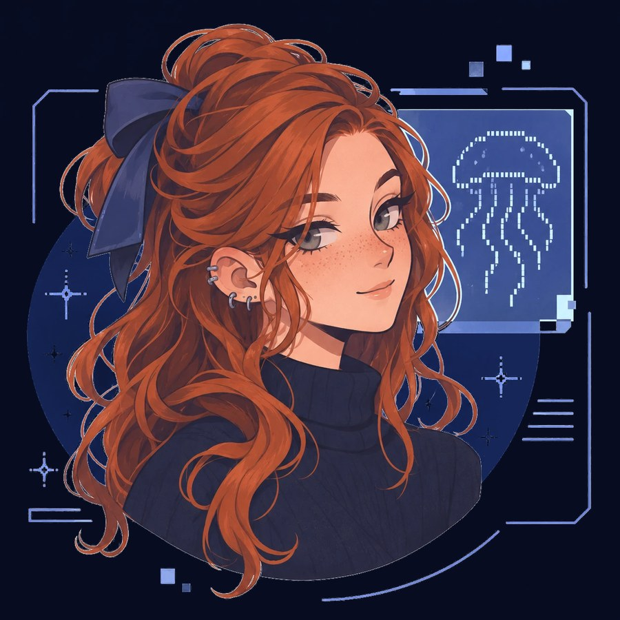
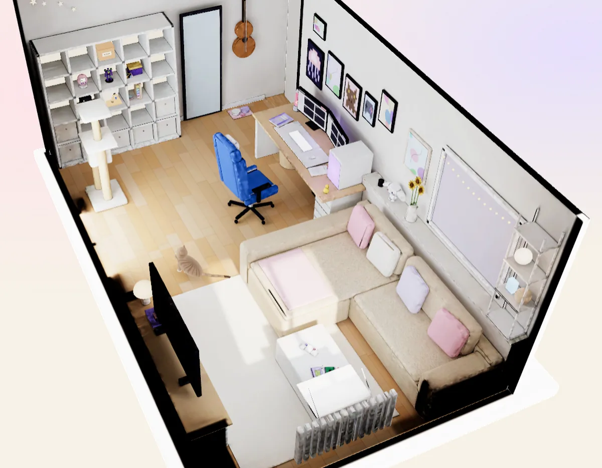

Ingénieure logiciel — Lyon · 45.76° N, 4.83° E
LénaSimonin
Full-stack · PHP, C#, Angular et design systems
Je conçois et développe des solutions de vidéosurveillance cloud de bout en bout : back-end en PHP et C#, interfaces en Angular, de la maquette Figma au UI kit partagé et ses design tokens.


Sélection
Réalisations
Le travail au quotidien sur un UI kit partagé, et deux projets personnels conçus de bout en bout.
Au quotidien, aussi
Jeux, outils, essais
Expérimentations
Des projets plus courts ou plus libres, souvent nés d'une envie ou d'un exercice.
Archives
Visite interactive · Three.js
Le salon en 3D
Les mêmes projets, rangés dans mon salon : les écrans du bureau, le KALLAX, le carnet, la feuille de CV… et Hiki.
Visiter le salon en 3D
Profil
À propos
Ingénieure logiciel chez Hirsch Secure, je conçois des solutions de vidéosurveillance cloud de bout en bout : back-end en PHP et C#, interfaces en Angular et Electron, dessinées d'abord dans Figma. Je maintiens aussi le UI kit Angular partagé par plusieurs produits de la holding.
Ce que j'aime